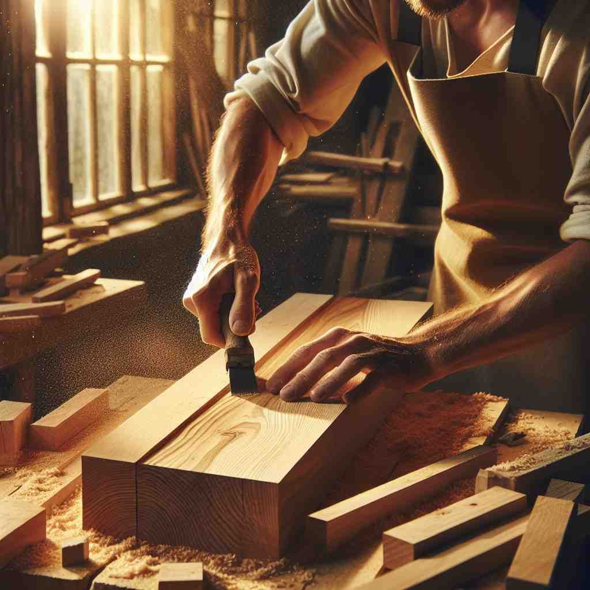
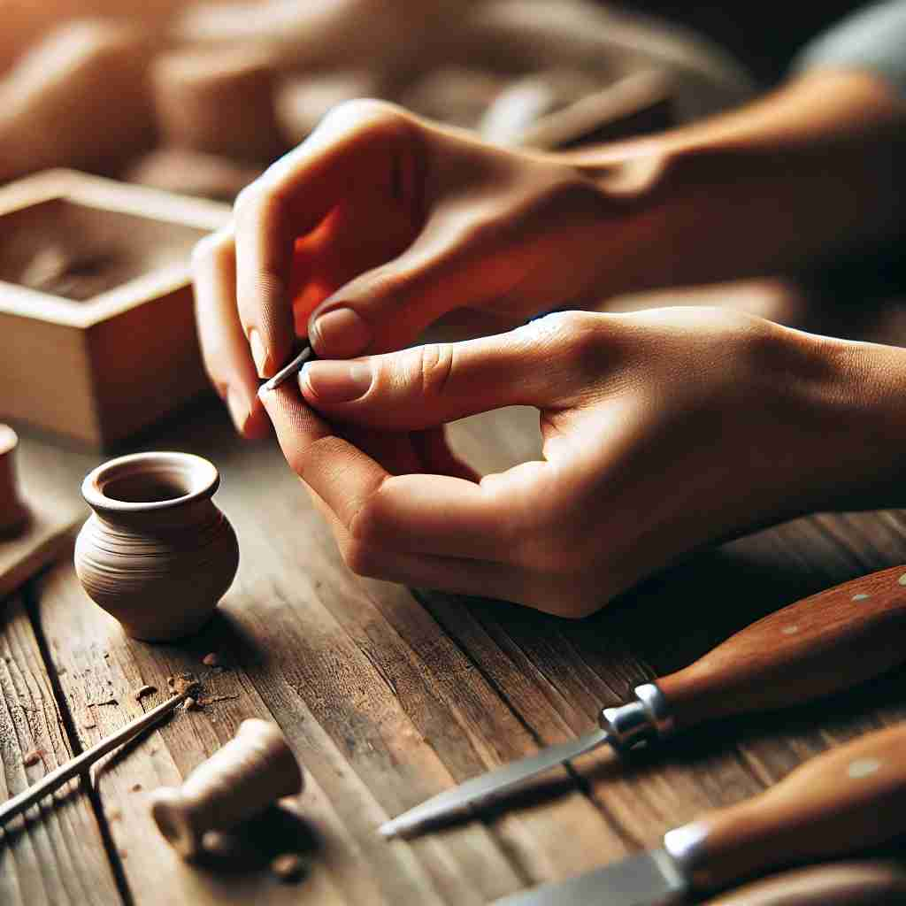

💬 The baker will make fresh bread for the customers.

💬 The children love to make a sandcastle at the beach.

💬 The carpenter wants to make a wooden chair from the logs.

💬 She wants to make a pottery piece for her friend.
🔈 [meɪk]
🗝️ v. to create or produce something by combining materials or putting parts together
🖼️ 在一个充满创意的工作室里，一位设计师正在将各种颜色的织物缝合在一起，制作一件独特的礼服。他用心挑选每一种材料，将它们组合成一件美丽的作品。这反映了'make'表示通过组合材料创造或生产某物的含义。
🔍 想象你正在"制造"（make）各种东西。无论是实物、情况、金钱、行为还是结果，都可以用"制造"的概念来联想。这个核心动作贯穿了"make"的各种用法，帮助你更容易记住和理解它的多重含义。"制造"可以是具体的创造，也可以是抽象的产生或导致。
💬 The baker will make fresh bread for the customers.
💬 The children love to make a sandcastle at the beach.
💬 The carpenter wants to make a wooden chair from the logs.
💬 She wants to make a pottery piece for her friend.
🌳 词根 "mak" 出自古英语 "macian"，意为 "制作、制造"，是一个基本动词, 直接表达制造或创建某物的动作。
💡 记住 "make" 时，可以将其联想为 "create" 或 "produce" 的过程。在各种创造和制造的场景下都能见到这个词，因此其核心意义很容易在实际应用中记住。
🗝️ v. to cause something to exist or happen
🖼️ 在一个温馨的家庭聚会上，妈妈点燃了生日蛋糕上的蜡烛，大家一同唱起生日歌。孩子许愿后，吹灭了蜡烛，瞬间整个氛围充满了欢快和美好。这展示了'make'作为促使某事存在或发生的含义。
💬 The joke made everyone laugh.
❓ 从"制造"延伸到"引起"或"导致"某事发生
🗝️ v. to earn or gain (money or profit)
🖼️ 在一个繁忙的商业街，一家咖啡店的老板正在结算当天的收益。他微笑着看着收银机屏幕上的数字，这天营业额不错，赚到了不少利润。这体现了'make'表示赚取或获得（金钱或利润）的含义。
💬 He makes a good living as a lawyer.
❓ 通过努力"制造"出金钱或利润
🗝️ v. to force or cause someone to do something
🖼️ 在一节体育课上，教练鼓励一位疲惫的跑步选手再多跑一圈。选手在教练的鼓励下，咬紧牙关继续前进。教练的话语促使选手实现了更多的努力，这解释了'make'作为迫使或促使某人做某事的含义。
💬 Don't make me repeat myself.
❓ 通过影响"制造"出某人的行为
🗝️ v. to arrive at or reach (a place)
🖼️ 在一个迷人的音乐会现场，朋友们一起努力穿过人群，终于在开场前抵达了舞台前。他们兴奋地准备享受接下来的表演，这展示了'make'表示到达或抵达某地的含义。
💬 We should make it to the airport by 6 PM.
❓ 通过努力"制造"出到达某处的结果
🗝️ v. to be or become
🖼️ 在一个和谐的社区中，一位普通市民经过多年努力，成为当地的市长。她的转变为他人树立了榜样，展现了'make'表示成为某个角色或身份的含义。
💬 She'll make a great teacher someday.
❓ 从"制造"延伸到"成为"某种状态
🗝️ v. to calculate or estimate
🖼️ 在一个热闹的市场中，小商贩正在快速地计算他一天的销售额。他熟练地按下计算器上的数字，迅速得到了结果。这说明了'make'作为计算或估算的含义。
💬 I make the total cost to be around $500.
❓ 在头脑中"制造"出计算或估计的结果